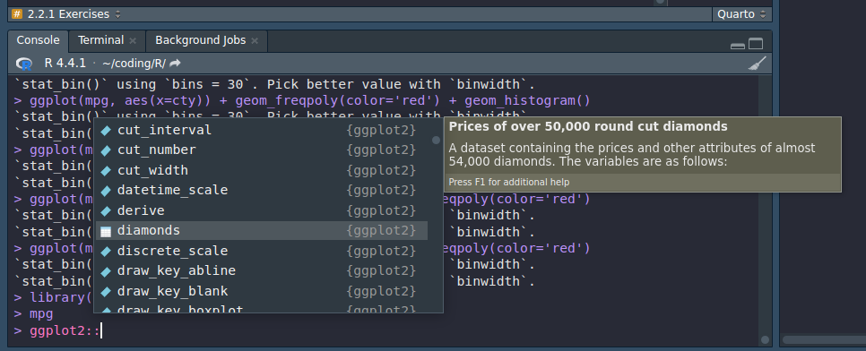
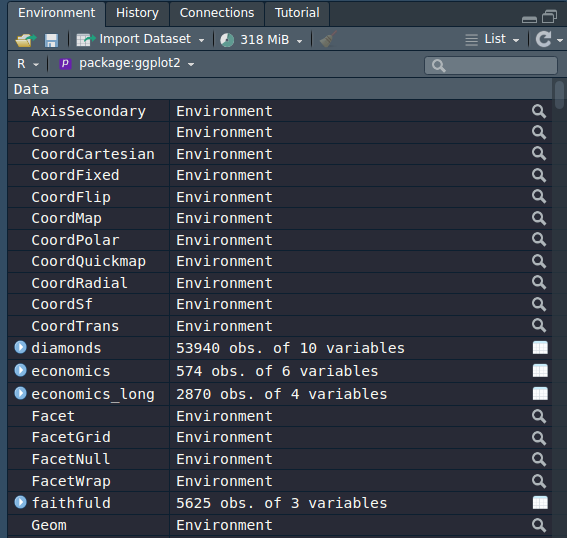

This is the first post on this series. I will go over the book and give genuine commentary as I follow the tutorial.
Author
invictus
Published
July 9, 2024
Preface
Previously, I’ve been using Python in Jupyter Notebooks along with its tools such as Pandas, Seaborn, Plotly. I’m not an expert yet. I’m barely familiar with the toolset. Then, I found out about R. I heard many interesting things about: it’s simplicity, it’s advantages over Python, it’s power over Statistic and Data Analysis. Then, I found ggplot2. I instantly fell in love with its grammar of graphics.
Then, I tried R myself. It’s amazing. I decided, well, I guess I’ll dump Python right there and there. I’m not saying Python is bad at all. It’s amazing. I’ve been using it for years for scripting. I just feel that R is well more suited for data analysis. It’s as if it’s designed for it.
I’ve learned a bit about ggplot on R4DS. Then I stopped midway and asked myself: “Why don’t I just dive deep into it before continuing?” I already know there’s an amazing book ggplot2: Elegant Graphics for Data Analysis (3e), available for free online.
At first, I was just exploring blindly, trying many functions while skimming through the books. It’s fun and all, but I realized that I could make my learning much more effective if I document it. Especially if I use narrative: explaining the steps I take, and my thought process in-between.
And, here I am. It’s barely a month since I started exploring the world of Data Analysis, and I already fell in love with it. That’s why I decided to be serious about it.
Alright, that’s enough of my story, let’s get started. Feel free to follow along with the book. As the title suggests, we’ll be working on each chapter with each post. Therefore, this post will be dedicated to document my journey on chapter Getting Started
2.1 Introduction
The goal of this chapter is to teach you how to produce useful graphics with ggplot2 as quickly as possible. You’ll learn the basics of ggplot() along with some useful “recipes” to make the most important plots.
Looks like the book will follow a similiar pattern to R4DS and Python4DS. The first chapter will be a rapid overview. No problem.
Here we’ll skip the theory and focus on the practice, and in later chapters you’ll learn how to use the full expressive power of the grammar.
Since there is no theory, I’m guessing there will be a lot of experiments and figuring things out. Sounds fun.
In this chapter you’ll learn:
About the mpg dataset included with ggplot2, Section 2.2.
The three key components of every plot: data, aesthetics and geoms, Section 2.3.
How to add additional variables to a plot with aesthetics, Section 2.4.
How to display additional categorical variables in a plot using small multiples created by faceting, Section 2.5.
A variety of different geoms that you can use to create different types of plots, Section 2.6.
Things you can do with a plot object other than display it, like save it to disk, Section 2.8.
That seems a lot for an introduction. Oh right, it’s a rapid overview. That makes sense. I wonder what mpg dataset is.
2.2 Fuel Economy Data
In this chapter, we’ll mostly use one data set that’s bundled with ggplot2: mpg. It includes information about the fuel economy of popular car models in 1999 and 2008, collected by the US Environmental Protection Agency, http://fueleconomy.gov.
Ahh, car models. Too bad I’m not familiar with cars. Let’s see if I can follow along.
library(ggplot2)mpg
# A tibble: 234 × 11
manufacturer model displ year cyl trans drv cty hwy fl class
<chr> <chr> <dbl> <int> <int> <chr> <chr> <int> <int> <chr> <chr>
1 audi a4 1.8 1999 4 auto… f 18 29 p comp…
2 audi a4 1.8 1999 4 manu… f 21 29 p comp…
3 audi a4 2 2008 4 manu… f 20 31 p comp…
4 audi a4 2 2008 4 auto… f 21 30 p comp…
5 audi a4 2.8 1999 6 auto… f 16 26 p comp…
6 audi a4 2.8 1999 6 manu… f 18 26 p comp…
7 audi a4 3.1 2008 6 auto… f 18 27 p comp…
8 audi a4 quattro 1.8 1999 4 manu… 4 18 26 p comp…
9 audi a4 quattro 1.8 1999 4 auto… 4 16 25 p comp…
10 audi a4 quattro 2 2008 4 manu… 4 20 28 p comp…
# ℹ 224 more rows
The variables are mostly self-explanatory:
cty and hwy record miles per gallon (mpg) for city and highway driving.
displ is the engine displacement in litres.
drv is the drivetrain: front wheel (f), rear wheel (r) or four wheel (4).
model is the model of car. There are 38 models, selected because they had a new edition every year between 1999 and 2008.
class is a categorical variable describing the “type” of car: two seater, SUV, compact, etc.
Okay, understandable.
This dataset suggests many interesting questions. How are engine size and fuel economy related? Do certain manufacturers care more about fuel economy than others? Has fuel economy improved in the last ten years?
Now I want to pull up ggplot right away and draw a scatter plot.
We will try to answer some of these questions, and in the process learn how to create some basic plots with ggplot2.
But let’s follow the intended workflow for now. There’s plenty of time and other datasets to freely explore.
2.2.1 Exercises
List five functions that you could use to get more information about the mpg dataset.
How can you find out what other datasets are included with ggplot2?
Apart from the US, most countries use fuel consumption (fuel consumed over fixed distance) rather than fuel economy (distance travelled with fixed amount of fuel). How could you convert cty and hwy into the European standard of l/100km?
Which manufacturer has the most models in this dataset? Which model has the most variations? Does your answer change if you remove the redundant specification of drive train (e.g. “pathfinder 4wd”, “a4 quattro”) from the model name?
Interesting questions. Let’s try unpacking them one by one.
List five functions that you could use to get more information about the mpg dataset.
I’m not sure exactly what ‘functions’ the text are referring to? Any functions? I can list several functions from dplyr packages, but I’m not sure that’s what intended because this is book on ggplot. But at the same time, we’re just starting out, so we aren’t supposed to know many ggplot functions, yet.
Tricky. I guess I’ll lean toward ‘any’.
select()
filter()
mutate()
arrange()
distinct()
Yeah, whatever, haha. If you know what the answer should’ve been, let me know in the comments.
How can you find out what other datasets are included with ggplot2?
Usually, I just do ggplot:: and browse through the suggested auto-completion. The dataset will have a special icon on it.

In RStudio, you can do similar thing by browsing the Environment tab.

I don’t know how to take HD screenshots. The compression quality doesn’t change anything. So please let me know if you know.
Apart from the US, most countries use fuel consumption (fuel consumed over fixed distance) rather than fuel economy (distance travelled with fixed amount of fuel). How could you convert cty and hwy into the European standard of l/100km?
Wait, what. I’m not familiar all of these terms. Let me look it up…
The text highlights the difference between two ways of measuring fuel efficiency: fuel consumption and fuel economy.
Fuel consumption is the amount of fuel used over a fixed distance, typically measured in liters per 100 kilometers (L/100km) or gallons per 100 miles (gal/100mi). This metric directly indicates how much fuel a vehicle consumes to cover a specific distance.
On the other hand, fuel economy is the distance traveled with a fixed amount of fuel, often expressed in kilometers per liter (km/L) or miles per gallon (mpg). This measure represents the efficiency of a vehicle in terms of how far it can go on a given quantity of fuel.
Okay, I’m starting to get the hang of it. However, I believe that researching the difference between the two is beyond the scope of this chapter, let alone this book. So, let’s skip over this. (Read: I’m too lazy to deal with Math, lol)
Which manufacturer has the most models in this dataset? Which model has the most variations? Does your answer change if you remove the redundant specification of drive train (e.g. “pathfinder 4wd”, “a4 quattro”) from the model name?
What does ‘most models’ supposed to mean here? I’m guessing it means ‘most amounts of models’, regardless of how many cars are there with those models.
At first, the group by function from dplyr cames to mind, but the book is about ggplot, not dplyr, so I doubt we should be using that here.
My guess is, ggplot should be able to help us see which manufacturer has the most models through visualization.
As starters, let’s create a scatterplot with manufacturer as the x and model as the y
mpg
# A tibble: 234 × 11
manufacturer model displ year cyl trans drv cty hwy fl class
<chr> <chr> <dbl> <int> <int> <chr> <chr> <int> <int> <chr> <chr>
1 audi a4 1.8 1999 4 auto… f 18 29 p comp…
2 audi a4 1.8 1999 4 manu… f 21 29 p comp…
3 audi a4 2 2008 4 manu… f 20 31 p comp…
4 audi a4 2 2008 4 auto… f 21 30 p comp…
5 audi a4 2.8 1999 6 auto… f 16 26 p comp…
6 audi a4 2.8 1999 6 manu… f 18 26 p comp…
7 audi a4 3.1 2008 6 auto… f 18 27 p comp…
8 audi a4 quattro 1.8 1999 4 manu… 4 18 26 p comp…
9 audi a4 quattro 1.8 1999 4 auto… 4 16 25 p comp…
10 audi a4 quattro 2 2008 4 manu… 4 20 28 p comp…
# ℹ 224 more rows
Nope, it doesn’t help much. I could manually count the dot for each manufacturer, but that’s inefficient. Is there a way to collapse all the points and just make a bar to show many models each manufacturer has? Ahh, we can, if we make manipulation first using dplyr. We’re back to square one.
Alright, I guess we still have to transform the data
library(dplyr)
Attaching package: 'dplyr'
The following objects are masked from 'package:stats':
filter, lag
The following objects are masked from 'package:base':
intersect, setdiff, setequal, union
I forgot what the data looks like, let’s see…
mpg
# A tibble: 234 × 11
manufacturer model displ year cyl trans drv cty hwy fl class
<chr> <chr> <dbl> <int> <int> <chr> <chr> <int> <int> <chr> <chr>
1 audi a4 1.8 1999 4 auto… f 18 29 p comp…
2 audi a4 1.8 1999 4 manu… f 21 29 p comp…
3 audi a4 2 2008 4 manu… f 20 31 p comp…
4 audi a4 2 2008 4 auto… f 21 30 p comp…
5 audi a4 2.8 1999 6 auto… f 16 26 p comp…
6 audi a4 2.8 1999 6 manu… f 18 26 p comp…
7 audi a4 3.1 2008 6 auto… f 18 27 p comp…
8 audi a4 quattro 1.8 1999 4 manu… 4 18 26 p comp…
9 audi a4 quattro 1.8 1999 4 auto… 4 16 25 p comp…
10 audi a4 quattro 2 2008 4 manu… 4 20 28 p comp…
# ℹ 224 more rows
Ahh, alright. Let’s select the unique values from the manufacturer and model.
mpg |>distinct(manufacturer, model)
# A tibble: 38 × 2
manufacturer model
<chr> <chr>
1 audi a4
2 audi a4 quattro
3 audi a6 quattro
4 chevrolet c1500 suburban 2wd
5 chevrolet corvette
6 chevrolet k1500 tahoe 4wd
7 chevrolet malibu
8 dodge caravan 2wd
9 dodge dakota pickup 4wd
10 dodge durango 4wd
# ℹ 28 more rows
Now it’s much clearer, but it doesn’t immediately show us which manufacturer has the most models. That’s where group by comes in
I’m not sure why it’s defaulting to alphabetical sorting, but we can see that Toyota has the most models: 6. Well, we can see that from the table anyway.
Does your answer change if you remove the redundant specification of drive train (e.g. “pathfinder 4wd”, “a4 quattro”) from the model name?
I’m not familiar with cars, so it depends on whether these 2 specification are different. It says ‘redundant’, so I’m guessing they’re the same model. If that’s the case, then yes it would change the answer, because both models will be counted as 1 model.
Closing
Alright, the post become much longer than expected. And we’re still halfway through the chapter. We’ll continue the second part on a new post.
Also, I heavily underestimated the amount of content the book has. So, unless, there’s something very interesting, we’ll just jump straight to the Exercises.